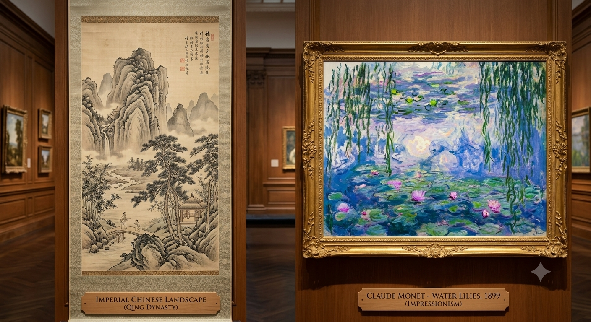

Technique: Utilizes "Cun" (wrinkle strokes) and varying ink wash densities to suggest form and depth without reliance on fixed perspective.
Theme: Emphasizes the "spirit" of the landscape (Shan Shui), viewing nature as a philosophical space for contemplation rather than a photographic reproduction.
Technique: Utilizes broken, visible brushstrokes and juxtaposition of complementary colors to capture the "fleeting" quality of light.
Theme: Focuses on the objective observation of daily life and nature, transforming mundane scenes into vibrant, sensory experiences.
Western perspectival techniques reach the Qing imperial court, blending with traditional silk scroll painting.
Impressionists like Monet and Degas are captivated by the flat, asymmetrical compositions of Eastern art, fundamentally changing Western composition.
Artists like Zao Wou-Ki harmonize Chinese calligraphic energy with the large-scale abstraction of the West, bridging two worlds entirely.